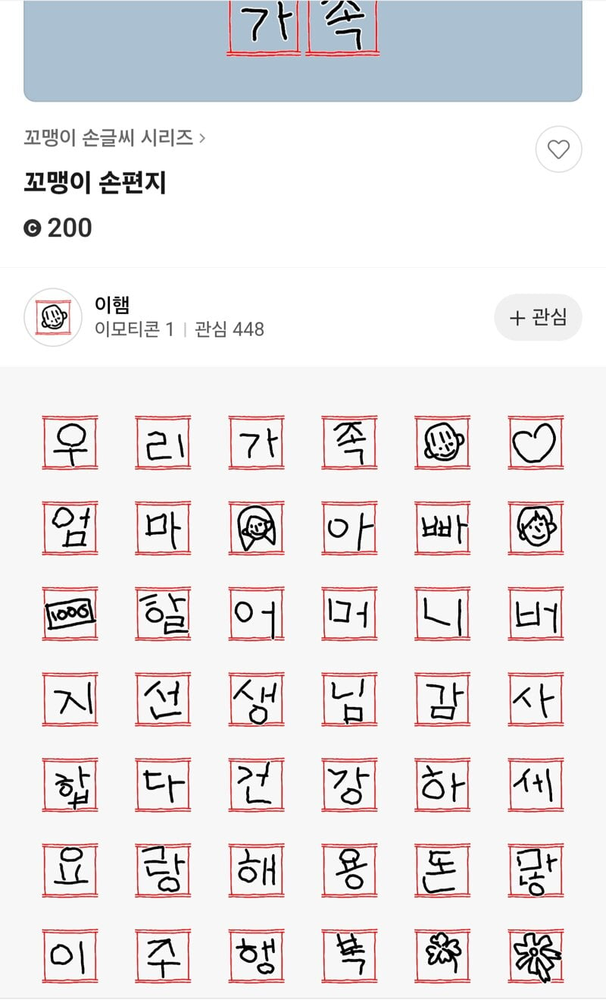
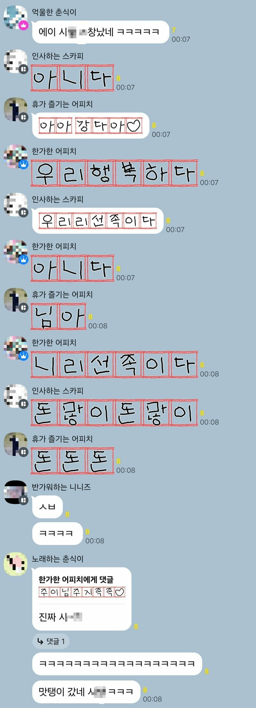
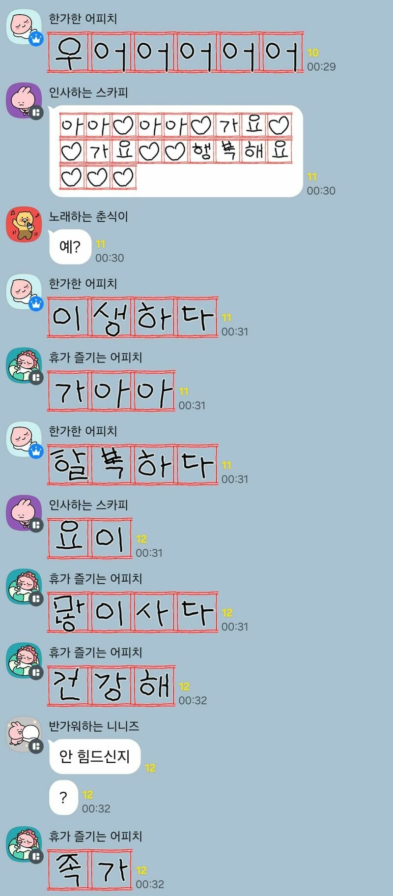

순서대로 쓰면 훈훈한 이모티콘인데...


ㅋㅋㅋㅋㅋㅋ

순서대로 쓰면 훈훈한 이모티콘인데...


ㅋㅋㅋㅋㅋㅋ
리선족 쓰고싶은데 '리'글자가 없네 이거
리 있음 ㅋㅋ 맨 첫줄 우리가족에 있음
본문에 리선족 있음
니가사세요
아빠가사생아
강건마
주지마사지
우리아빠가선생님이랑♡해용
니어머니건마
니아빠머리빠가사리
아빠머리많이빠지세요
너는 악마다
아빠머리많이빠지세요는 ㅠㅠ ㅋㅋㅋㅋ

니리선족이다 ㅋㅋㅋㅋ
ㅋㅋㅋㅋ 개웃기네
「족가」 ㅋㅋㅋㅋㅋㅋㅋㅋㅋㅋㅋㅋㅋㅋㅋㅋㅋㅋㅋㅋㅋㅋㅋㅋㅋㅋㅋㅋㅋ
아 존나웃었네 ㅋㅋㅋㅋㅋㅋㅋㅋㅋㅋㅋㅋㅋㅋ
헉
ㅋㅋㅋㅋㅋㅋ당장사러간다
주지 족족 ㅆㅂ ㅋㅋㅋㅋㅋㅋ
머머리복복복복
바이럴하려면 이정도는 하라고 ㅋㅋㅋ